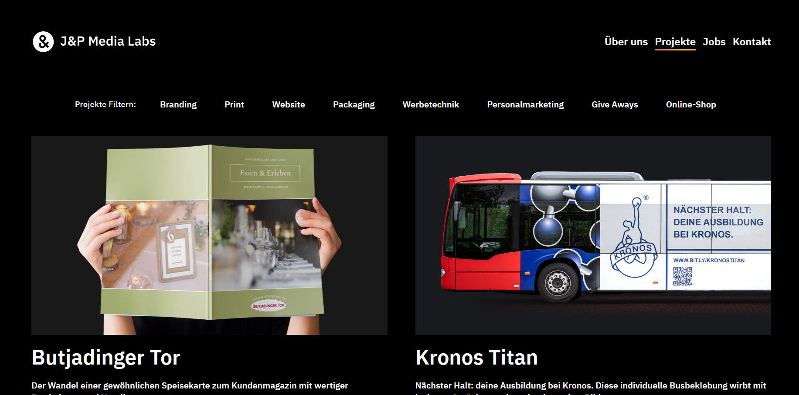

Sean Halpin's Portfolio: My main inspiration for layout.
This website with its round-cornered floating containers inspired mine. I really like how the grids are assymetrical highlighting important items by making the larger while still having balanced spacing.

J&P Media Labs: My main inspiration for aesthetics
This website has such a clean look with its white on black colour scheme, a bright colour brings the user's focus to a single point on the site by using colour sparsely.
